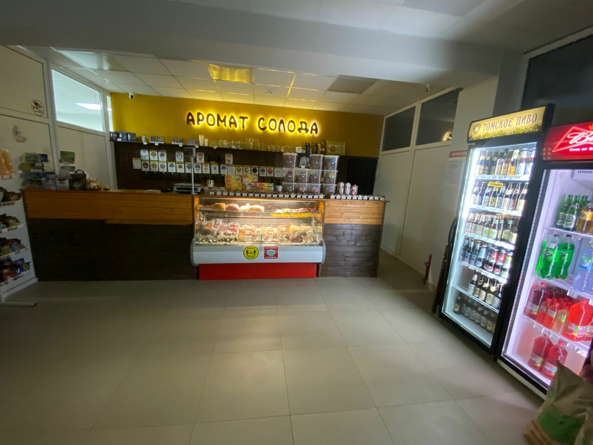

Основной контент
Лучшие пивные магазины Вязьмы: топ-10, рейтинг 2025. Мы собрали лучшие магазины разливного пива в Вязьме, которые хорошо зарекомендовали себя по реальным отзывам потребителей в 2025 году.-
Аромат Солода
Средняя оценка: 5.0 из 5
Магазин разливных напитков, расположенный по адресу улица Полины Осипенко, 29. Клиенты отмечают широкий ассортимент свежего пива и высокое качество обслуживания.
Преимущества:
- Широкий выбор сортов пива
- Всегда свежее пиво
- Приветливый и компетентный персонал
- Удобное расположение
- Чистота и порядок в помещении
Недостатки:
- Ограниченное количество мест для сидения
Минимальная цена: 150 рублей за литр
-
ПИВО/hub
Средняя оценка: 4.9 из 5
Магазин пива на Красноармейском шоссе, 11, предлагает разнообразие сортов и качественное обслуживание. Посетители хвалят атмосферу и свежесть напитков.
Преимущества:
- Разнообразие сортов пива
- Качественное обслуживание
- Уютная атмосфера
- Свежесть продукции
- Удобное расположение
Недостатки:
- Иногда бывает многолюдно
Минимальная цена: 140 рублей за литр
-
Варница
Средняя оценка: 4.8 из 5
Магазин разливного пива на Московской улице, 38, известен широким выбором и качеством обслуживания. Клиенты отмечают частые обновления ассортимента.
Преимущества:
- Широкий выбор сортов
- Частое обновление ассортимента
- Приветливый персонал
- Удобное расположение
- Чистота в помещении
Недостатки:
- Ограниченное количество закусок
Минимальная цена: 145 рублей за литр
-
Пивной Дом
Средняя оценка: 4.7 из 5
Магазин на улице 25 Октября, 24, предлагает разнообразие разливного пива и закусок. Посетители ценят уютную атмосферу и качественное обслуживание.
Преимущества:
- Уютная атмосфера
- Разнообразие закусок
- Качественное обслуживание
- Чистота и порядок
- Удобный график работы
Недостатки:
- Иногда бывает очередь в часы пик
Минимальная цена: 150 рублей за литр
-
Пивная Лавка
Средняя оценка: 4.6 из 5
Магазин на улице Ленина, 44, известен разнообразием сортов пива и дружелюбным персоналом. Клиенты отмечают частые акции и скидки.
Преимущества:
- Разнообразие сортов пива
- Дружелюбный персонал
- Частые акции и скидки
- Удобное расположение
- Чистота в помещении
Недостатки:
- Ограниченное количество мест для сидения
Минимальная цена: 140 рублей за литр
-
Пивной Рай
Средняя оценка: 4.5 из 5
Магазин на улице Строителей, 8, предлагает широкий выбор разливного пива и закусок. Посетители хвалят качество продукции и обслуживание.
Преимущества:
- Широкий выбор пива
- Качественные закуски
- Приветливый персонал
- Уютная атмосфера
- Чистота и порядок
Недостатки:
- Иногда бывает шумно
Минимальная цена: 150 рублей за литр
-
Пивной Уголок
Средняя оценка: 4.4 из 5
Магазин на улице Глинки, 2, известен уютной атмосферой и внимательным персоналом. Клиенты отмечают качественное пиво и закуски.
Преимущества:
- Уютная